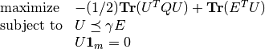
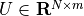
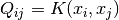
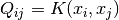
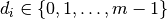
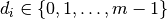
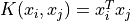
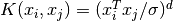
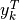

Multiclass SVM¶
Crammer and Singer (2001) have extended the binary SVM classifier to classification problems with more than two classes. The training problem of the Crammer-Singer multiclass SVM can be expressed as a QP
(1)¶
with variable  where  is
the number of training examples and
is
the number of training examples and  the number of
classes. The
the number of
classes. The  kernel matrix
kernel matrix  is given by
 where
is given by
 where  is a kernel function and
is a kernel function and
 is the i’th row of the data matrix
is the i’th row of the data matrix
 , and
, and  is an -vector with labels (i.e.
).
is an -vector with labels (i.e.
).
Documentation
A custom solver for the multiclass support vector machine training
problem is available as a Python module mcsvm. The module
implements the following function:
mcsvm(X, labels, gamma, kernel = 'linear', sigma = 1.0, degree = 1)¶Solves the problem (1) using a custom KKT solver.
The input arguments are the data matrix
.
Valid kernel functions are:
'linear'- the linear kernel: 
'poly'- the polynomial kernel: 
The kernel parameters
and
Returns the function
classifier(). Ifis
then classifier(Y) returns a list with as its k’th element
where  is row
of
is the optimal solution of the QP (1).